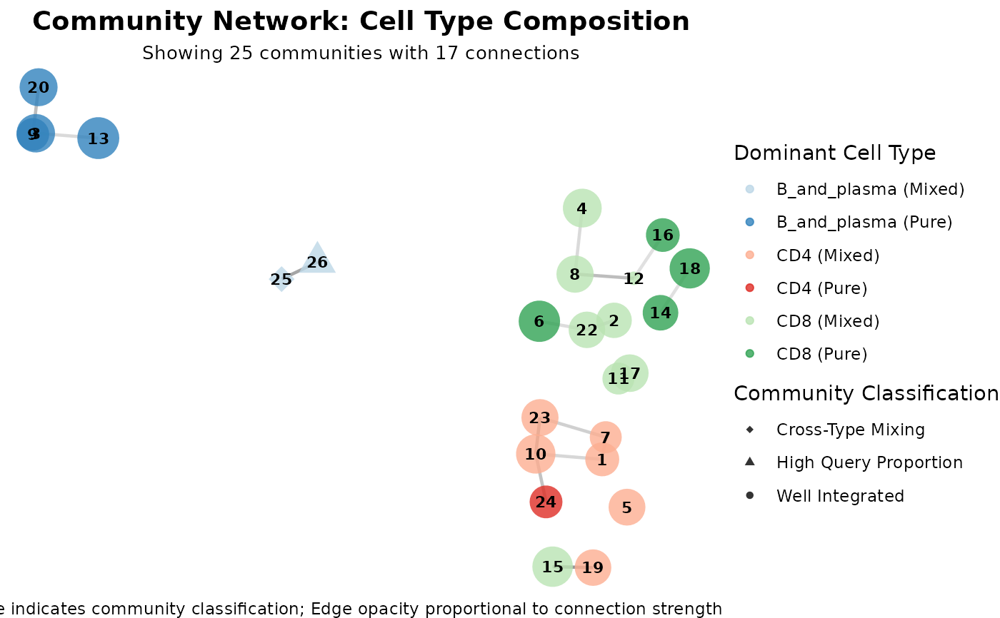
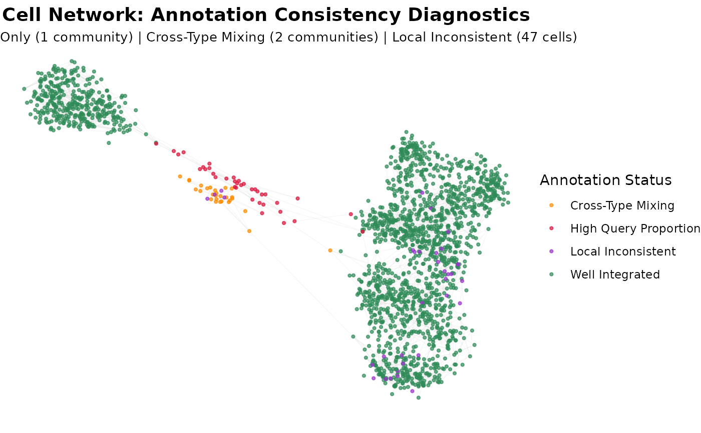
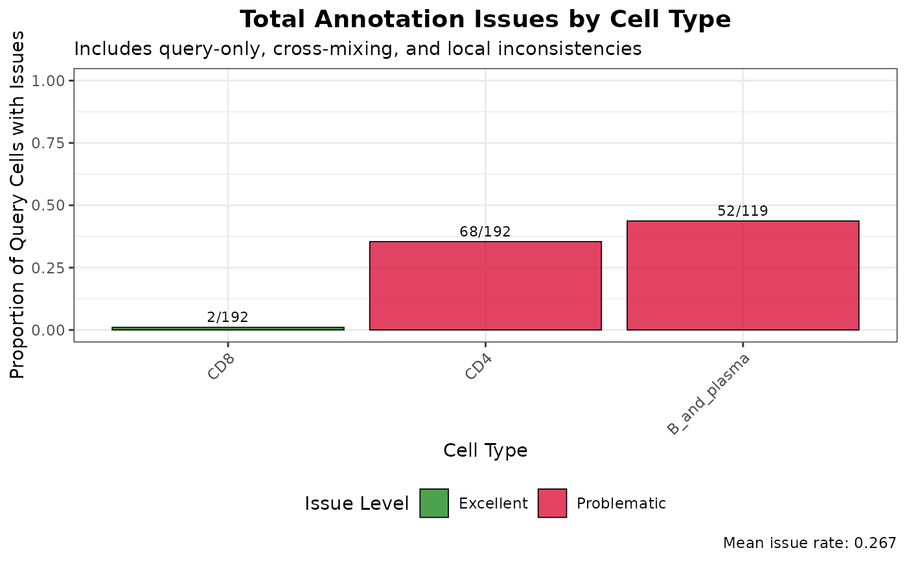
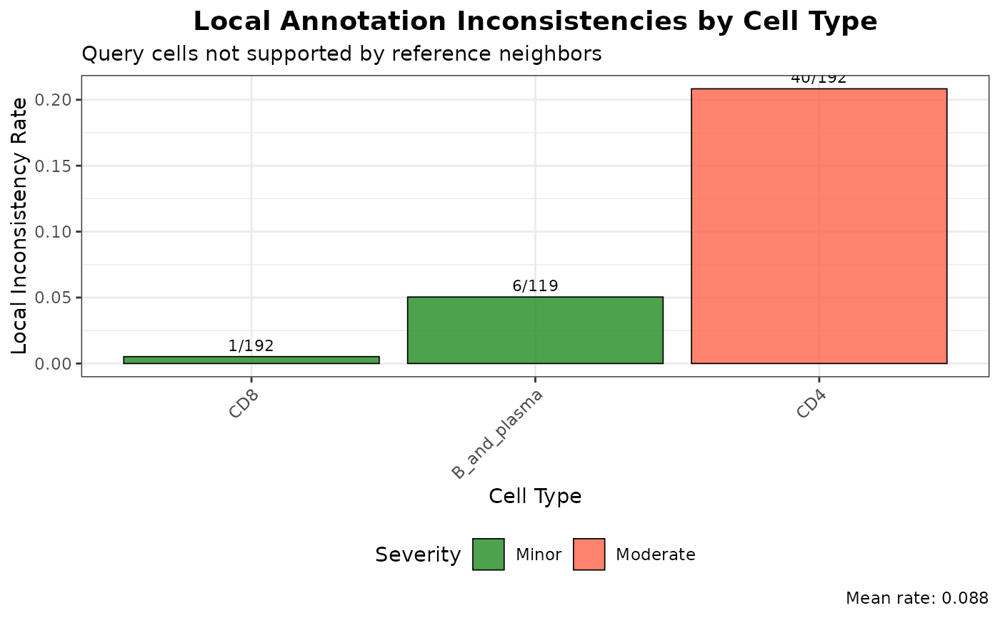

Calculate Graph Community Integration Diagnostics
Source:R/calculateGraphIntegration.R, R/plot.calculateGraphIntegrationObject.R
calculateGraphIntegration.RdThis function performs graph-based community detection to identify annotation inconsistencies by detecting query-only communities, true cross-cell-type mixing patterns, and local annotation inconsistencies based on immediate neighborhood analysis.
The S3 plot method generates visualizations of annotation consistency diagnostics, including query-only communities, cross-cell-type mixing, and local annotation inconsistencies.
calculateGraphIntegration(
query_data,
reference_data,
query_cell_type_col,
ref_cell_type_col,
cell_types = NULL,
pc_subset = 1:10,
k_neighbors = 30,
assay_name = "logcounts",
resolution = 0.1,
min_cells_per_community = 10,
min_cells_per_celltype = 20,
high_query_prop_threshold = 0.9,
cross_type_threshold = 0.15,
local_consistency_threshold = 0.6,
local_confidence_threshold = 0.2,
max_cells_query = 5000,
max_cells_ref = 5000
)
# S3 method for class 'calculateGraphIntegrationObject'
plot(
x,
plot_type = c("community_network", "cell_network", "community_data", "summary",
"local_issues", "annotation_issues"),
color_by = c("cell_type", "community_type"),
max_nodes = 2000,
point_size = 0.8,
exclude_reference_only = FALSE,
...
)Arguments
- query_data
A
SingleCellExperimentobject containing numeric expression matrix for the query cells.- reference_data
A
SingleCellExperimentobject containing numeric expression matrix for the reference cells.- query_cell_type_col
A character string specifying the column name in the query dataset containing cell type annotations.
- ref_cell_type_col
A character string specifying the column name in the reference dataset containing cell type annotations.
- cell_types
A character vector specifying the cell types to include in the analysis. If NULL, all cell types are included.
- pc_subset
A vector specifying the subset of principal components to use in the analysis. Default is 1:10.
- k_neighbors
An integer specifying the number of nearest neighbors for graph construction. Default is 30.
- assay_name
Name of the assay on which to perform computations. Default is "logcounts".
- resolution
Resolution parameter for Leiden clustering. Default is 0.15 for fewer, larger communities.
- min_cells_per_community
Minimum number of cells required for a community to be analyzed. Default is 10.
- min_cells_per_celltype
Minimum number of cells required per cell type for inclusion. Default is 20.
- high_query_prop_threshold
Minimum proportion of query cells to consider a community "query-only". Default is 0.9.
- cross_type_threshold
Minimum proportion needed to flag cross-cell-type mixing. Default is 0.1.
- local_consistency_threshold
Minimum proportion of reference neighbors that should support a query cell's annotation. Default is 0.6.
- local_confidence_threshold
Minimum confidence difference needed to suggest re-annotation. Default is 0.2.
- max_cells_query
Maximum number of query cells to retain after cell type filtering. If NULL, no downsampling of query cells is performed. Default is 5000.
- max_cells_ref
Maximum number of reference cells to retain after cell type filtering. If NULL, no downsampling of reference cells is performed. Default is 5000.
- x
An object of class
calculateGraphIntegrationObjectcontaining the diagnostic results.- plot_type
Character string specifying visualization type. Options: "community_network" (default), "cell_network", "community_data", "summary", "local_issues", or "annotation_issues".
- color_by
Character string specifying the variable to use for coloring points/elements if `plot_type` is "community_network" or "cell_network". Default is "cell_type".
- max_nodes
Maximum number of nodes to display for performance. Default is 2000.
- point_size
Point size for graph nodes. Default is 0.8.
- exclude_reference_only
Logical indicating whether to exclude reference-only communities/cells from visualization. Default is FALSE.
- ...
Additional arguments passed to ggplot2 functions.
Value
A list containing:
- high_query_prop_analysis
Analysis of communities with only query cells
- cross_type_mixing
Analysis of communities with true query-reference cross-cell-type mixing
- local_annotation_inconsistencies
Local neighborhood-based annotation inconsistencies
- local_inconsistency_summary
Summary of local inconsistencies by cell type
- community_composition
Detailed composition of each community
- annotation_consistency
Summary of annotation consistency issues
- overall_metrics
Overall diagnostic metrics
- graph_info
Graph structure information for plotting
- parameters
Analysis parameters used
The list is assigned the class "calculateGraphIntegration".
A ggplot object showing integration diagnostics.
Details
The function performs three types of analysis: (1) Communities containing only query cells, (2) Communities where query cells are mixed with reference cells of different cell types WITHOUT any reference cells of the same type, and (3) Local analysis of each query cell's immediate neighbors to detect annotation inconsistencies even within mixed communities.
The S3 plot method creates optimized visualizations showing different types of annotation issues including community-level and local neighborhood-level inconsistencies.
See also
calculateGraphIntegration
Examples
# Load data
data("reference_data")
data("query_data")
# Remove a cell type (Myeloid)
library(scater)
#> Loading required package: SingleCellExperiment
#> Loading required package: SummarizedExperiment
#> Loading required package: MatrixGenerics
#> Loading required package: matrixStats
#>
#> Attaching package: ‘MatrixGenerics’
#> The following objects are masked from ‘package:matrixStats’:
#>
#> colAlls, colAnyNAs, colAnys, colAvgsPerRowSet, colCollapse,
#> colCounts, colCummaxs, colCummins, colCumprods, colCumsums,
#> colDiffs, colIQRDiffs, colIQRs, colLogSumExps, colMadDiffs,
#> colMads, colMaxs, colMeans2, colMedians, colMins, colOrderStats,
#> colProds, colQuantiles, colRanges, colRanks, colSdDiffs, colSds,
#> colSums2, colTabulates, colVarDiffs, colVars, colWeightedMads,
#> colWeightedMeans, colWeightedMedians, colWeightedSds,
#> colWeightedVars, rowAlls, rowAnyNAs, rowAnys, rowAvgsPerColSet,
#> rowCollapse, rowCounts, rowCummaxs, rowCummins, rowCumprods,
#> rowCumsums, rowDiffs, rowIQRDiffs, rowIQRs, rowLogSumExps,
#> rowMadDiffs, rowMads, rowMaxs, rowMeans2, rowMedians, rowMins,
#> rowOrderStats, rowProds, rowQuantiles, rowRanges, rowRanks,
#> rowSdDiffs, rowSds, rowSums2, rowTabulates, rowVarDiffs, rowVars,
#> rowWeightedMads, rowWeightedMeans, rowWeightedMedians,
#> rowWeightedSds, rowWeightedVars
#> Loading required package: GenomicRanges
#> Loading required package: stats4
#> Loading required package: BiocGenerics
#> Loading required package: generics
#>
#> Attaching package: ‘generics’
#> The following objects are masked from ‘package:base’:
#>
#> as.difftime, as.factor, as.ordered, intersect, is.element, setdiff,
#> setequal, union
#>
#> Attaching package: ‘BiocGenerics’
#> The following objects are masked from ‘package:stats’:
#>
#> IQR, mad, sd, var, xtabs
#> The following objects are masked from ‘package:base’:
#>
#> Filter, Find, Map, Position, Reduce, anyDuplicated, aperm, append,
#> as.data.frame, basename, cbind, colnames, dirname, do.call,
#> duplicated, eval, evalq, get, grep, grepl, is.unsorted, lapply,
#> mapply, match, mget, order, paste, pmax, pmax.int, pmin, pmin.int,
#> rank, rbind, rownames, sapply, saveRDS, table, tapply, unique,
#> unsplit, which.max, which.min
#> Loading required package: S4Vectors
#>
#> Attaching package: ‘S4Vectors’
#> The following object is masked from ‘package:utils’:
#>
#> findMatches
#> The following objects are masked from ‘package:base’:
#>
#> I, expand.grid, unname
#> Loading required package: IRanges
#> Loading required package: Seqinfo
#> Loading required package: Biobase
#> Welcome to Bioconductor
#>
#> Vignettes contain introductory material; view with
#> 'browseVignettes()'. To cite Bioconductor, see
#> 'citation("Biobase")', and for packages 'citation("pkgname")'.
#>
#> Attaching package: ‘Biobase’
#> The following object is masked from ‘package:MatrixGenerics’:
#>
#> rowMedians
#> The following objects are masked from ‘package:matrixStats’:
#>
#> anyMissing, rowMedians
#> Loading required package: scuttle
#> Loading required package: ggplot2
library(SingleR)
reference_data <- reference_data[, reference_data$expert_annotation != "Myeloid"]
reference_data <- runPCA(reference_data, ncomponents = 50)
SingleR_annotation <- SingleR(query_data, reference_data,
labels = reference_data$expert_annotation)
query_data$SingleR_annotation <- SingleR_annotation$labels
# Check annotation data
table(Expert = query_data$expert_annotation, SingleR = query_data$SingleR_annotation)
#> SingleR
#> Expert B_and_plasma CD4 CD8
#> B_and_plasma 98 3 1
#> CD4 0 133 5
#> CD8 0 44 186
#> Myeloid 21 12 0
# Run comprehensive annotation consistency diagnostics
graph_diagnostics <- calculateGraphIntegration(
query_data = query_data,
reference_data = reference_data,
query_cell_type_col = "SingleR_annotation",
ref_cell_type_col = "expert_annotation",
pc_subset = 1:10,
k_neighbors = 30,
resolution = 0.1,
high_query_prop_threshold = 0.9,
cross_type_threshold = 0.15,
local_consistency_threshold = 0.6,
local_confidence_threshold = 0.2
)
# Look at main output
graph_diagnostics$overall_metrics
#> $total_communities
#> [1] 25
#>
#> $high_query_prop_communities
#> [1] 1
#>
#> $true_cross_type_communities
#> [1] 2
#>
#> $total_high_query_prop_cells
#> [1] 34
#>
#> $total_true_cross_mixing_cells
#> [1] 41
#>
#> $total_locally_inconsistent_cells
#> [1] 47
#>
#> $modularity
#> [1] 0.5956145
#>
#> $mean_query_isolation_rate
#> [1] 0.08245798
#>
#> $mean_true_cross_mixing_rate
#> [1] 0.09674078
#>
#> $mean_local_inconsistency_rate
#> [1] 0.08798728
#>
# Network graph showing all issue types (color by cell type)
plot(graph_diagnostics, plot_type = "community_network", color_by = "cell_type")

# Network graph showing all issue types
plot(graph_diagnostics, plot_type = "cell_network",
max_nodes = 2000, color_by = "community_type")

# Network graph showing all issue types
plot(graph_diagnostics, plot_type = "community_data")
# Summary bar chart of all issues by cell type
plot(graph_diagnostics, plot_type = "summary")

# Focus on local annotation inconsistencies
plot(graph_diagnostics, plot_type = "local_issues")

# Overall annotation issues overview
plot(graph_diagnostics, plot_type = "annotation_issues")